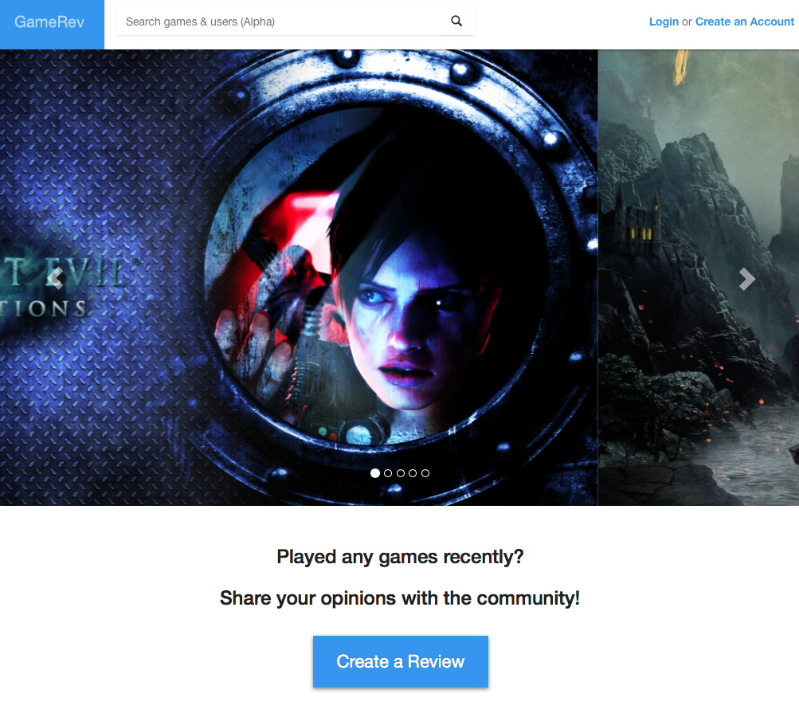
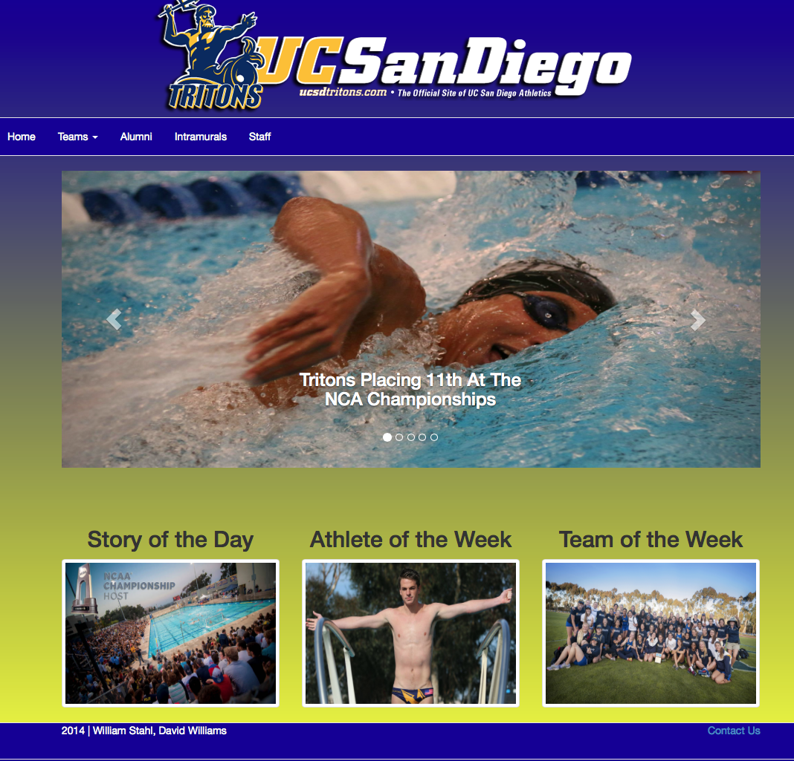

A little bit About Me
I am a recent graduate of UC San Diego with a Bachelor of Arts degree in Cognitive Science. I am actively seeking a full-time position as a UI/UX researcher and designer. My formal background in computation, behavior, and the neurological basis of cognition position me to serve with a team or an individual contributor in the field of cognitive science via computer science solutions.
GameRev: User-Centered Game Review Mobile App
My team designed and implemented a functional mobile app that allows the gaming community to share their video game reviews. We used prototyping and A/B Testing to create a mobile app for the gaming community that would be accessible to the average gamer.
Role: Front-end HTML programming and Reseach through interviews, prototyping, and A/B Testing
Hangout: Location-Based Social App
My team designed and implemented a functional web app that allows users, based on their location, to find people with similar interest in activities and connects them
Role: Research through prototyping and early designing
UCSD Athletics: Redesigned Webpage
My team redesigned a fully functional top bar navigation for the UC San Diego athletic webpage. The redesign sought to create simplicity for the end user, and arose from a course project that focused on branding and consistency.
Role: Front-end HTML programming